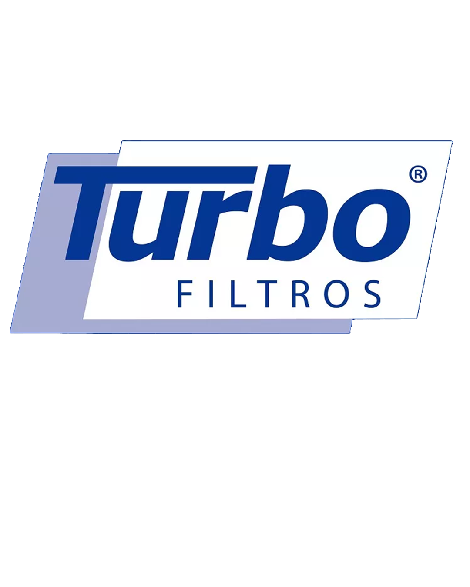
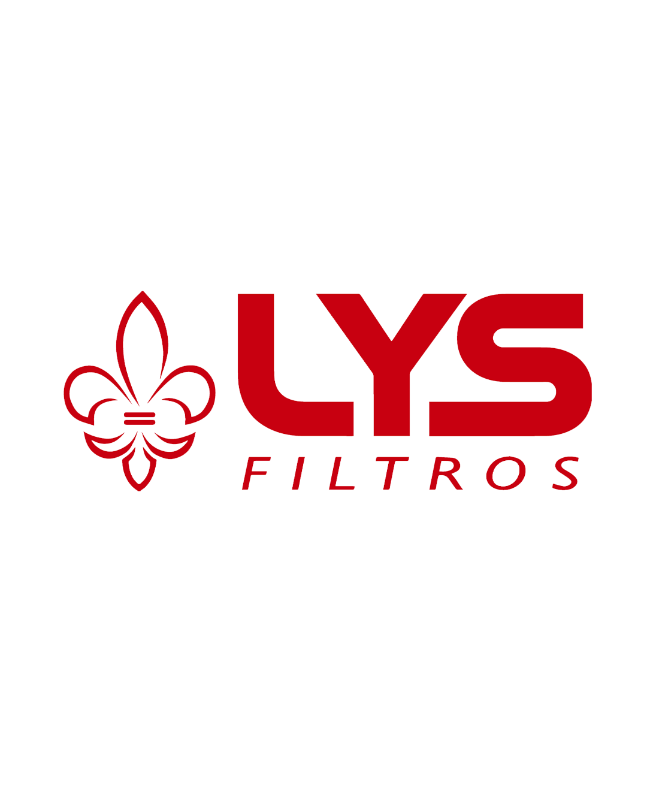
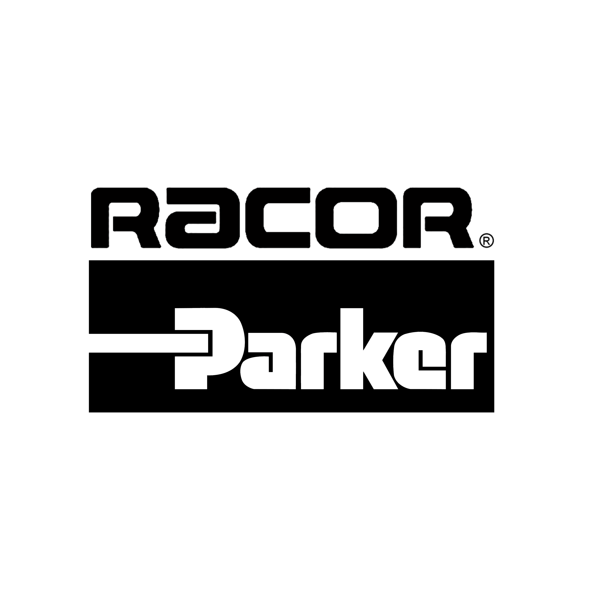
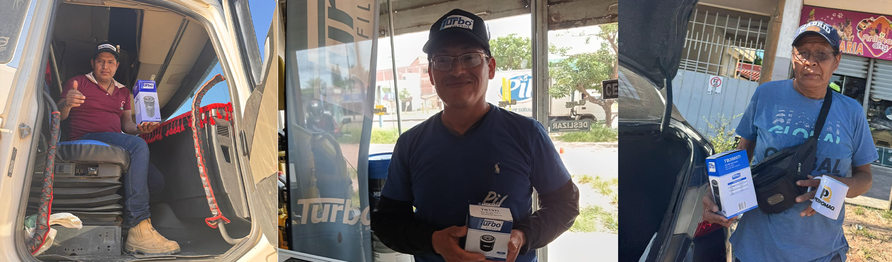
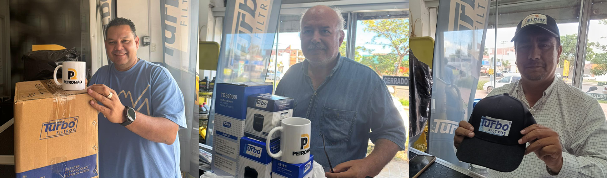

Distribuidor autorizado para Bolivia:




Distribuidor autorizado para Bolivia:








En PETROMAQ somos una empresa boliviana especializada en la importación y distribución de filtros, grasas y lubricantes de alto rendimiento.
Nacimos con la misión de proveer soluciones técnicas confiables para el mantenimiento y la operación eficiente de motores y maquinaria en todo el país.
Trabajamos con marcas reconocidas internacionalmente y productos con certificaciones de calidad, pensados para responder a los desafíos del trabajo boliviano.
Filtros de alto rendimiento compatibles con motores Volvo diésel utilizados en transporte pesado, larga distancia y logística. Disponibles para modelos F12, F16, FH, FM, NL y otras aplicaciones de carga.
Garantizan máxima protección del motor, mayor eficiencia y vida útil prolongada incluso en condiciones severas de operación.
También disponibles para maquinaria pesada, equipos industriales y vehículos livianos.
Grasas de alto desempeño diseñadas para componentes sometidos a cargas extremas, vibración, humedad y polvo. Ideales para sistemas de suspensión, rodamientos, chasis y maquinaria asociada al transporte pesado.
Proporcionan excelente adhesión, protección contra desgaste y funcionamiento confiable en condiciones de trabajo exigentes.
Aceites formulados para motores diésel de camiones Volvo y otras marcas de transporte pesado. Reducen fricción, controlan la temperatura y protegen componentes críticos durante operación continua.
Permiten intervalos de mantenimiento más prolongados y mayor confiabilidad en rutas de larga distancia.
Flotas de transporte y logística
Talleres mecánicos y servicios técnicos
Agroindustria y maquinaria agrícola
Sector minero, construcción y maquinaria pesada
Empresas de mantenimiento industrial
📍 Av. Virgen de Cotoca 7mo Anillo, Pampa de la Isla (Cerca del Banco Sol) - Santa Cruz, Bolivia 👉 Ver Ubicación
📍 Sobre el 4to anillo entre Radial 10 y San Aurelio (a lado de tienda 3b) - Santa Cruz, Bolivia 👉 Ver Ubicación
📞 WhatsApp: +591 74666430 o +591 62111135 o +591 71644088
✉️ Email: petromaqventas@gmail.com